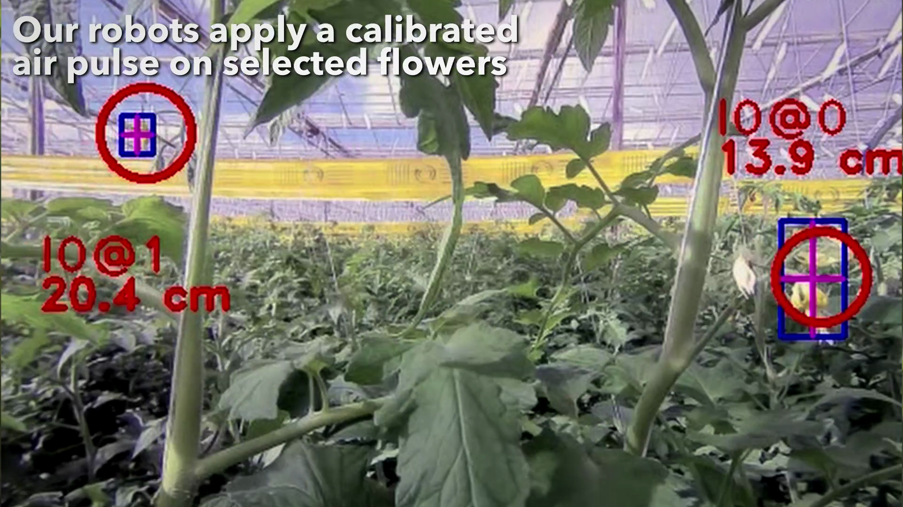
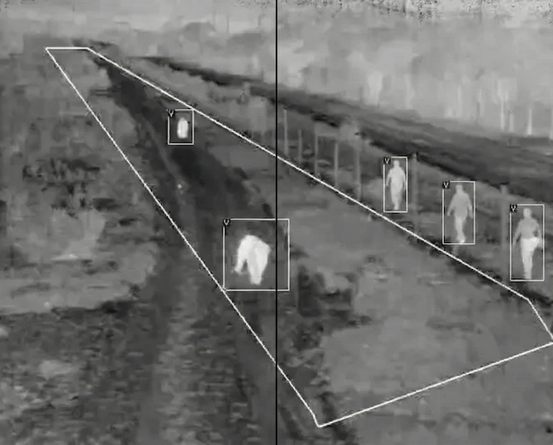
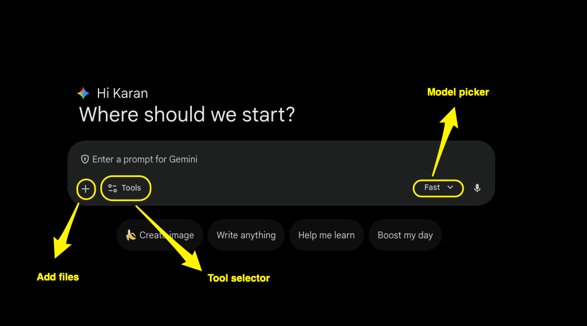

AI for Data Analysis
San Francisco Bay Bird Observatory (SFBBO)
Welcome
Today’s goal: become confident using AI to accelerate data analysis.
What we’ll do in the workshop:
Explore the foundations of how AI works.
Learn to integrate Gemini into your daily workflows.
Review best practices for getting the best AI outputs.
Practice with real-world scenarios using fictional SFBBO survey data.
Quick Poll: What are your feelings towards AI?
Raise your hand if you fall in the following group:
AI Enthusiast: Excited to use AI tools daily!
AI Curious: Interested but unsure where to start!
AI Skeptic: Unsure about AI’s role in society.
Share a moment where AI surprised you!
Turn to a neighbor and share (2 min):
- A time AI helped you in unexpected ways
- Or a time AI let you down
Things you can do with AI today
Transcribe meeting notes automatically.
Make you look younger in photos.
Write code for data analysis or building websites.
Build detailed itineraries.
Accelerate Writing.
Manage Your Schedule.
Create misinformation.
Advise best time to buy consumer goods.
AI in the real world
Costa Group deploys computer vision-powered pollinators instead of bumblebees in Australian greenhouses.



AI in the real world
Catch poachers in the dark



How AI is Created
Step 1: Collect massive amounts of text

Billions of pages from the internet, books, research papers, code repositories
Remove spam, personal data, and low-quality text
Curate a balanced dataset covering many topics
Convert words to vectors
Imagine you’re playing a video game where you have to create a character. You have sliders for different traits:
- Strength: 10
- Magic: 2
- Speed: 8
That list of numbers (10, 2, 8) is a vector.
For the word “Apple,” the sliders might look like:
- Is it Food?: 0.98 (Very high)
- Is it Tech?: 0.85 (Pretty high)
- Is it Red?: 0.90 (Very high)
- Is it a Planet?: 0.01 (Almost zero)
The vector for “Apple” is just a long list of these numbers: [0.98, 0.85, 0.90, 0.01…].
Wait, What?
If you take the vector for King subtract the vector for Man and add the vector for Woman the resulting numbers will lead you almost perfectly to the vector for Queen.
King - Man + Woman = Queen
The computer doesn’t “know” what a Queen is; it just knows that the mathematical distance between those concepts is identical.
Fine-tuning
Imagine I give you a sentence: “The astronaut climbed into the _______.”
You’d probably guess “rocket” or “spaceship.” You wouldn’t guess “sandwich.”
The AI does this trillions of times. During training, it’s shown a sentence with the last word hidden. It makes a random guess.
Human experts label examples of good vs. bad responses
Why modern AI feels so human?
If you said, “The bank was closed because the river overflowed,” an older AI might think you were talking about a place where you keep your money.
The Attention mechanism acts like a spotlight. When the modern AI sees the word “bank,” its spotlight instantly swings over to the word “river.”
Context is King: The Attention mechanism allows the AI to understand that one word can have five different meanings depending on its “neighbors.”
Why doesn’t the AI give the same answer every time?
Because of a setting called Temperature.
- Low Temperature (0.1 - 0.3): The AI always picks the #1 most likely word. It’s very logical but boring.
- High Temperature (0.7 - 1.0): The AI is allowed to pick the 3rd or 10th most likely word. This is where “creativity” comes from.
Extreme Improv aka Hallucinations
On rare/obscure topics (e.g., a niche local law, a new species), the model may not have enough signal to be sure.
But it still has to predict the next token—so it keeps going.
Ask something impossible (“Why did George Washington invent the internet?”) and it may confidently improvise.
The danger isn’t just being wrong—it’s sounding certain.
Tokens
AI doesn’t see words. It sees tokens.
A Token is usually a word piece. For example, unhappiness might be split into un, happi, and ness— 3 tokens.
Asking an AI something and getting a response consumes tokens.
Think of tokens as Lego blocks of language. If you give a child a Lego set, they don’t see a Castle; they see 400 individual plastic bricks.
Context Length
- Context length is the amount of info the AI can hold in its head to answer your specific question.
Just like a tired student skimming a textbook, the AI’s “attention” is strongest at the start and the finish, but it “zones out” during the long middle stretch!
Limits of Context Length
Most modern AI models can handle between 200,000 and 1,000,000 tokens of context.
1,000 tokens is roughly 750 words (about the length of a two-page essay).
Welcome Gemini!
Gemini is Google’s family of AI models, designed to rival other leading AI models.
What’s special about Gemini?
- Built to handle extremely long context lengths (up to 1 million tokens!)
- Designed to be more reliable and factual
- Can reason through complex problems better than previous models
- You get a free subscription of Gemini with your Google Workspace account!
Gemini comes in 2 flavors
Flash prioritizes speed, efficiency, and cost.
Pro focuses on advanced reasoning, creativity, and handling complex tasks.
Let’s access Gemini!
Go to Gemini App and sign in with your Google Workspace account (if not already signed in).
Let’s understand the interface!
Let’s take it for a spin!
- Using the Tool selector as Create images and the Model picker as Fast, type the following prompt:
Generate a photo of a Snowy Plover nesting on human plastic wrappers with the text as “Stop Pollution”.
Change the model to a Pro model!
Using the Tool selector as Create images and the Model picker as Pro, type the following prompt:
Generate a photo of a Snowy Plover nesting on human plastic wrappers with the text as “Stop Pollution”.
See if the outputs differ between the Fast and Pro models!
Can someone explain me what this paper is all about
Scientific mumbo-jumbo paper link
Download the paper using File > Download
Just use Gemini to summarize it

Prompt: Explain this to a Gen Z person
Using Gemini, identify this bird species!

What happens if you ask it to identify a fake bird species?

Break Time!
Recap so far
- AI models are trained on massive text datasets to predict the next word.
- Modern AI uses attention mechanisms to understand context.
- Gemini offers advanced capabilities with long context lengths and improved reasoning.
What do you think will happen if you ask the following question to Gemini?
Give me the key trends or insights from SFBBO’s 2023 bird survey data.